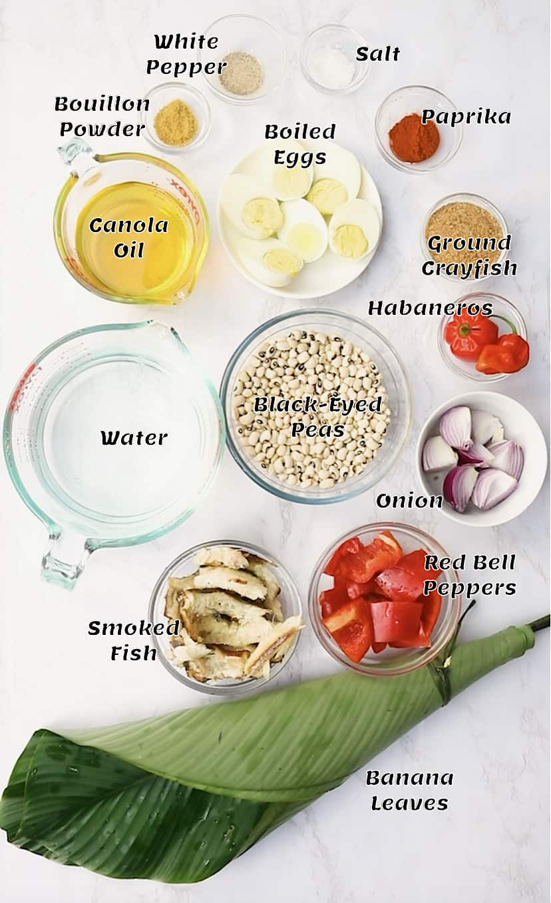
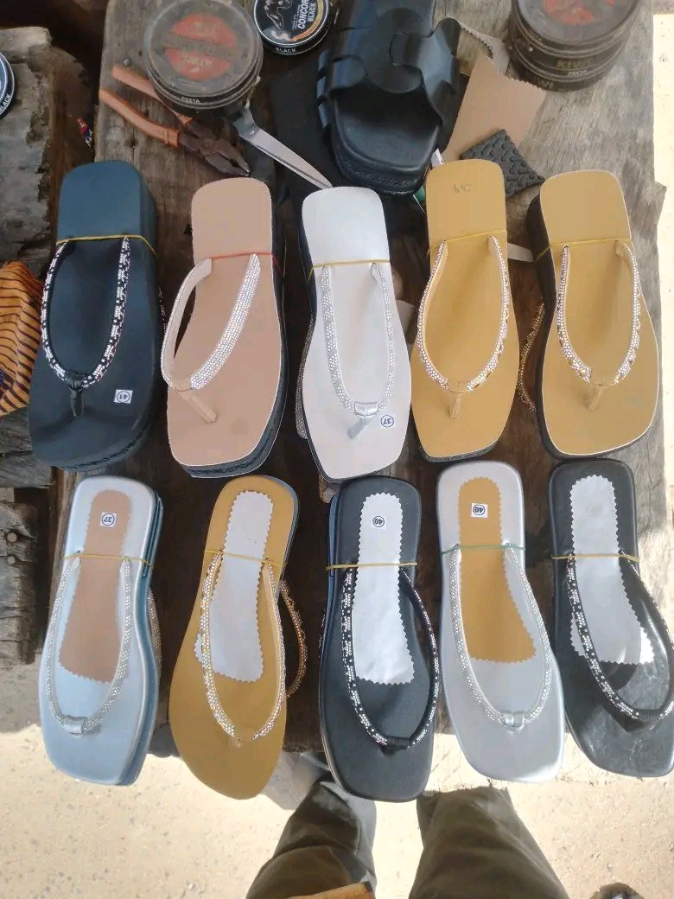
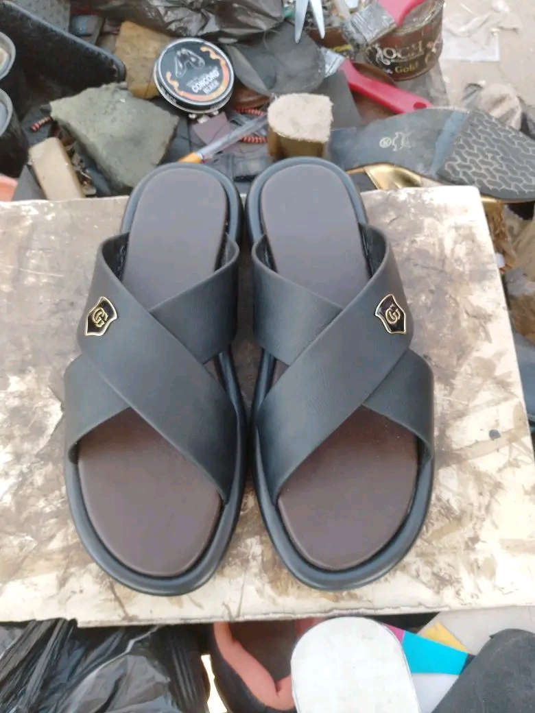

The Nigerian Education Loan Fund (NELFUND) has commenced the payment of monthly upkeep allowances to eligible university students across the country. The initiative is aimed at easing financial burdens and helping students concentrate on their academic activities without unnecessary hardship.
Students who successfully completed their applications have started receiving notifications and payments. Education stakeholders believe the programme will improve access to quality education and reduce dropout rates caused by financial difficulties.
Beneficiaries have expressed appreciation to the Federal Government while encouraging fellow students to ensure their applications and bank details are correctly submitted.
Comments
Steps for Making Moi Moi
By Sandra Dauda | Feature Story

Moi Moi is one of Nigeria's most nutritious and widely enjoyed meals. It is prepared from peeled beans blended with fresh pepper, onions, crayfish, seasoning and vegetable oil before being steamed to perfection.
To prepare delicious Moi Moi, wash and peel the beans, blend all ingredients into a smooth paste, add seasoning, fish or boiled eggs if desired, then pour the mixture into containers or leaves before steaming for about 45 to 60 minutes.
Apart from being a healthy family meal, Moi Moi has become a profitable business for many young entrepreneurs because of its high demand at schools, ceremonies and restaurants.
Comments
Shoe Making Business: A Profitable Skill for Young Entrepreneurs
By Sandra Dauda | Business


Shoe making has become one of the fastest-growing vocational businesses in Nigeria. With determination and proper training, many young people are earning a steady income by producing quality handmade footwear.
The business requires leather, gum, thread, cutting tools and creativity. Many successful shoemakers now market their products online through Facebook, Instagram and WhatsApp, attracting customers from different parts of the country.
Learning shoe making not only creates employment but also helps reduce dependence on white-collar jobs. It is a practical skill with great potential for financial independence.